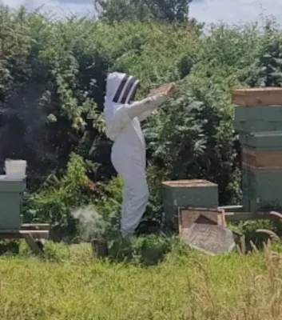

Other Honey Bee Conditions – Nosema, Chalkbrood, Stonebrood & More
Last updated: 1 May 2026

Not every health problem in a hive is caused by foulbrood, varroa or obvious pests. Honeybee colonies can also be affected by a range of other conditions – some caused by fungi or micro-organisms, others by nutritional stress, age of comb or environmental factors. These are often the cases where something looks "wrong" but does not immediately fit a classic disease picture. If you are starting from symptoms and are not sure which direction to investigate first, try the interactive colony health triage tool or the Bee Health Checker.
This page covers Nosema disease, chalkbrood, stonebrood, amoeba disease, baldbrood and wax moth damage, malnutrition and starvation, plus "colony collapse-type" losses. It is designed to sit alongside the main bee diseases overview and detailed pages on bacterial diseases, viral diseases and parasitic mites. If brood looks uneven or "off", it is also worth checking the brood pattern guide and reviewing your normal hive inspections and management.
Nosema Disease
Nosema refers to infection by microsporidian parasites that invade the mid-gut of adult bees. Two species are typically discussed in beekeeping texts. They can shorten lifespan and reduce colony performance, especially when combined with other stresses.
Possible signs of Nosema problems
- Slow spring build-up despite apparently adequate stores and a laying queen.
- Increased numbers of crawling or drifting bees with shortened lifespan.
- In some cases, spotty staining of faeces on the front of the hive or nearby surfaces – though this can also be caused by simple confinement during poor weather.
Field signs are not always clear-cut. Definite diagnosis usually requires microscopic examination of bee gut samples. Many modern colonies may carry low levels of Nosema without obvious signs; problems tend to appear when nutritional or other stresses are high. If you are working from vague signs such as dwindling bees, poor build-up or staining, compare the Bee Health Checker and colony health triage tool before jumping to one conclusion.
Management ideas for Nosema
- Maintain strong, well-fed colonies with good forage and nutrition.
- Avoid prolonged confinement where possible – ensure hives are in locations where bees can fly on milder winter days.
- Renew old or heavily soiled combs as part of your hive hygiene plan.
- Where Nosema is strongly suspected, seek current guidance from BeeBase, your Bee Inspector or association disease officer before considering any treatments.
Chalkbrood
Chalkbrood is a fungal disease of brood. It is common in many areas and is often more of a management indicator than a catastrophe, although severe cases can weaken colonies significantly.
Typical chalkbrood appearance
- Dead larvae that have turned into white, grey or black "mummies" in the cells.
- The mummies are hard and chalky, often shaped like the cell and sometimes visible on the hive floor.
- Brood patterns may become patchy where infected larvae have been removed.
Chalkbrood tends to be worse in cool, damp conditions or where colonies are stressed or under-strength. It is often seen in the early part of the season when brood rearing outstrips available nurse bees. Because it often shows up as a patchy brood nest, it is useful to compare suspicious frames with the brood pattern guide.
Managing chalkbrood
- Improve ventilation and avoid excessive damp inside the hive.
- Strengthen weak colonies by ensuring they have enough bees to cover brood (but avoid transferring brood from suspect hives).
- Replace badly affected comb over time, in line with your usual comb replacement schedule.
- Consider re-queening if chalkbrood is persistent and other causes have been ruled out – some bloodlines appear more tolerant than others.
Download it (Word/PDF)
Stonebrood and Beekeeper Safety
Stonebrood is caused by fungi in the genus Aspergillus. It is relatively uncommon but important because some Aspergillus species can also affect humans.
Key points about stonebrood
- Affected brood can harden into stone-like masses, often with a granular interior.
- The fungus can produce spores that may be hazardous to inhale, especially for people with respiratory conditions.
- Suspected stonebrood should be handled with extra caution.
If you suspect stonebrood, follow up-to-date official guidance. In general, that will include:
- Minimising disturbance and avoiding inhaling dust or spores.
- Seeking advice from a Bee Inspector or experienced advisor.
- Destroying affected comb and thoroughly cleaning or scorching equipment where recommended.
Amoeba Disease
Amoeba disease is caused by the protozoan Malpighamoeba mellificae, which infects the Malpighian tubules (part of the excretory system) in adult bees. It is usually considered a relatively minor disease but may weaken colonies already under other pressures.
Signs are non-specific and may include reduced longevity and poor spring build-up. As with Nosema, diagnosis generally requires laboratory examination. For most practical beekeepers, the response is the same: support overall colony strength and address more obvious stress factors such as poor nutrition or heavy varroa.
Baldbrood and Wax Moth Damage
Baldbrood describes a brood pattern where patches of comb show uncapped pupae with their heads and thoraxes exposed. It is often associated with tunnelling by wax moth larvae beneath the cappings.
What to look for
- Rows or clusters of brood with their cappings removed, especially in older or neglected comb.
- Tunnels or debris in the comb where wax moth larvae have been moving.
- Presence of wax moth larvae or cocoons in stored comb or unused equipment.
Strong colonies usually control small numbers of wax moths themselves. The bigger risk is in stored comb and weak colonies. Good hive management and timely inspections make these problems much easier to spot before damage becomes extensive.
Managing baldbrood and wax moth
- Replace badly damaged comb and avoid keeping very old, dark comb for many seasons.
- Store spare frames and supers in a way that discourages wax moth – for example, cool, well-ventilated storage, stacked boxes with light and airflow, or other recommended methods.
- Strengthen weak colonies or combine them where appropriate so they can police their own comb more effectively.
Malnutrition and Starvation
Bees need a balance of nectar (or syrup) and pollen to fuel brood rearing and maintain their own bodies. When forage is poor or weather traps bees indoors, colonies can experience malnutrition or outright starvation, even with a competent beekeeper. These cases are often searched as "my bees have died but I can't see disease", which is why this page is an important companion to the Bee Health Checker and colony health triage tool.
Warning signs
- Frames with patchy brood and limited pollen nearby.
- Light hives when lifted, especially in late winter or early spring.
- Bees dying on the comb with their heads still in cells, a classic sign of starvation.
Prevention is far better than cure. Key steps include:
- Regularly checking stores throughout the season, not just in winter.
- Feeding syrup or fondant when needed, according to season and local advice.
- Using suitable apiary sites and encouraging forage through bee-friendly planting.
- Keeping on top of routine hive inspections and management so you notice declining stores, poor brood coverage or weak colonies before they crash.
Colony Collapse-Type Losses
Many beekeepers experience occasional colonies that simply dwindle or disappear without an obvious single cause. These may be labelled as "colony collapse" in conversation, but in reality they often reflect a combination of issues:
- High varroa and associated viral damage.
- Poor nutrition or late/insufficient feeding.
- Queen problems and a prolonged period without enough young bees.
- Other conditions such as Nosema, chronic stress or environmental factors.
Record keeping note: If you administer any veterinary medicines while investigating losses (for example, treatments used as part of varroa control), keep a clear hive treatment log and retain it for at least five years. See Veterinary medicine records.
The most useful thing the beekeeper can do is to keep clear, honest records and a small number of comb samples where appropriate, so patterns become easier to spot over time. If you are trying to work back from unclear symptoms or a collapse-type loss, the colony health triage tool, Bee Health Checker and brood pattern guide can help narrow down likely causes. It is rarely "just bad luck".
Pulling It All Together
These "other conditions" may sound like a long list, but many of the day-to-day management actions are the same:
- Keep colonies well-fed and appropriately sized for their sites.
- Maintain regular inspections and hive management through the season.
- Use the brood pattern guide when brood looks uneven, patchy or hard to interpret.
- Follow a consistent hive hygiene and comb replacement plan.
- Monitor and manage parasitic mites and viral diseases sensibly.
- Use local teaching apiaries, BeeBase resources and Bee Inspectors as practical partners in maintaining bee health.
Taken together with the rest of the BeezKnees bee-health cluster, this page should help you understand where these "other conditions" fit in and give you confidence to recognise when something looks unusual – and when to ask for help. The colony health triage tool and Bee Health Checker are useful starting points when the signs do not fit neatly into one category, while the bee diseases overview helps you place these problems in the wider bee-health picture.
Related bee health guides
Colony Health Triage Tool – work through unclear symptoms step by step
Bee Health Checker – symptoms, likely causes and next actions
Brood Pattern Guide – compare patchy, uneven or unhealthy brood/
Hive Management – inspection habits and practical colony management
Bee Diseases and Pests Overview – the wider picture across brood disease, viruses, mites and pests